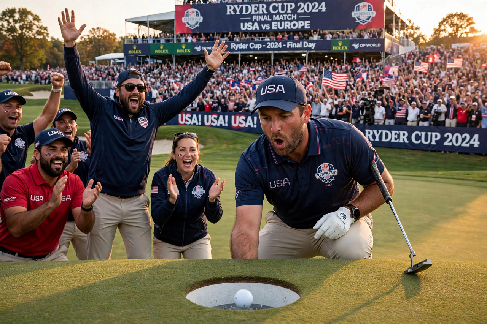

From Wikipedia, the free encyclopedia
| Ryder Cup | |
|---|---|
 A European player celebrating on the green as huge crowds watch a Ryder Cup match | |
| Established | 1927 |
| Teams | United States vs Europe (12 players each) |
| Format | Match play: foursomes, fourballs and singles |
| Frequency | Biennial (odd years in recent cycles) |
| Governing | PGA of America / Ryder Cup Europe |
The Ryder Cup is a biennial men's team golf competition between teams representing the United States and Europe. Named after Samuel Ryder, the English businessman who donated the trophy, it was first played in 1927 in Massachusetts. Originally contested between the United States and Great Britain, the British team was expanded to include continental Europe in 1979, transforming a frequently one-sided contest into one of the most fiercely competitive and popular events in world sport. Players receive no prize money; they compete for the trophy and team honour alone.
Each team fields twelve players, selected through qualifying points and captain's picks. Over three days the teams contest 28 matches: morning and afternoon sessions of foursomes (alternate shot) and fourballs (best ball) on the first two days, followed by twelve singles matches on the final day. Each match is worth one point, with half a point for a halved match; the first team to 14½ points wins the Cup, and a 14–14 tie leaves the trophy with the defending champions.
The United States dominated the early decades, losing only rarely before the European expansion. Since 1979 the contest has been closely fought, producing famous editions such as the 1999 "Battle of Brookline", when the Americans overturned a 10–6 deficit on the final day, and the 2012 "Miracle at Medinah", when Europe recovered from the same scoreline in the United States. Home advantage has become pronounced in recent decades, with partisan crowds a defining feature. The women's equivalent match is the Solheim Cup, and the Presidents Cup pits the United States against an International team in the years between Ryder Cups.
Categories: Ryder Cup | Team golf tournaments | Recurring sporting events established in 1927